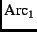
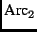
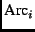
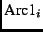
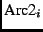

The Imports clause enables one Vesta SDL model to reference and use others; that is, it supports modular decomposition of Vesta SDL programs.
<
Imports ::= ImpClause* ImpClause ::= ImpIdReq | ImpIdOpt
There are two major forms of the Imports clause: one where identifiers are required (ImpIdReq), and one where they are optional (ImpIdOpt). Both forms have two sub-forms in which either a single model or a list of models may be imported.
First, consider the ImpIdReq case. This form is typically used to import models in the same package as the importing model. Each ImpItemR in the ImpIdReq clause takes one of two forms: an ImpSpecR or an ImpListR. Each form binds exactly one name.
ImpIdReq ::= import ImpItemR*;
ImpItemR ::= ImpSpecR | ImpListR
ImpSpecR ::= Arc = DelimPath
ImpListR ::= Arc = `[' ImpSpecR*, `]'
DelimPath ::= [ Delim ] Path [ Delim ]
Path ::= Arc { Delim Arc }*
Arc ::= Id | Integer | Text
In the ImpSpecR case, the name is bound to the t_closure value that results from evaluation of the contents of a file according to the Model evaluation rules of Section A.3.3.13. For example, consider the Import clause:
import self = progs.ves;
This clause binds the name self to the closure corresponding to the local progs.ves model in the same directory as the model in which it appears.
In the ImpListR case, the name is bound to a binding of such values. For example:
import sub =
[ progs = src/progs.ves, tests = src/tests.ves ];
This clause binds the name sub to a binding containing the names progs and tests; these names within the binding are bound to the closures corresponding to the models named progs.ves and tests.ves in the package's src subdirectory. For example, the progs.ves model could be invoked by writing ``sub/progs()''.
Because the Imports clause often mentions several files with names that share a common prefix, a syntactic form is provided to allow the prefix to be written once. This is the ImpIdOpt form. It is used to import models from other packages. The semantics are defined so that many identifiers are optional; when omitted, they default to the name of the package from which the model is being imported. As in the ImpIdReq case, ImpIdOpt has forms for importing both single models and lists of multiple models.
ImpIdOpt ::= from DelimPath import ImpItemO*; ImpItemO ::= ImpSpecO | ImpListO ImpSpecO ::= [ Arc = ] Path [ Delim ] ImpListO ::= Arc = `[' ImpSpecO*, `]'
Here are some examples of ImpIdOpt imports:
from /vesta/west.vestasys.org/vesta import
cache/12/build.ves;
libs = [ srpc/2/build.ves, basics/5/build.ves ];
This example binds the name cache to the closure corresponding to version 12 of that package's build.ves model, and it binds the name libs to a binding containing the names srpc and basics, bound to versions 2 and 5 of those package's build.ves models. (As the evaluation rules below describe, the three occurrences of ``/build.ves'' in this example could actually have been omitted.)
<
When multiple ImpItemR's are given in a ImpIdReq, the import keyword distributes over each of the ImpItemR's. That is:
import ImpSpec_1; ...; ImpSpec_n;
desugars to:
import ImpSpec_1; ...; import ImpSpec_n;
Similarly, the from clause distributes over the individual imports of an ImpIdOpt. In particular:
from DelimPath import ImpItemO_1; ...; ImpItemO_n;
desugars to:
from DelimPath import ImpItemO_1; ...; from DelimPath import ImpItemO_n;
The use of from makes it optional to supply a name for the closure value being introduced; if the name is omitted, it is derived from the Path following the import keyword as follows:
from DelimPath import
[ Arc_1 = ] [ Delim ] Arc_2 { Delim Arc }* [ Delim ]
desugars to:
import Arc =
DelimPath Delim Arc_2 { Delim Arc }* [ Delim ]
where Arc is  if it is present and is  otherwise. Similarly:
from DelimPath import Arc = [
[ Arc1_1 = ] [ Delim ] Arc2_1 { Delim Arc }* [ Delim ],
...,
[ Arc1_n = ] [ Delim ] Arc2_n { Delim Arc }* [ Delim ] ]
desugars to:
import Arc = [
Arc_1 = DelimPath Delim Arc2_1 {Delim Arc }* [ Delim ],
...,
Arc_n = DelimPath Delim Arc2_n {Delim Arc }* [ Delim ] ]
where  is  if it is present and is  otherwise.
<
Multiple ImpClause's are evaluated independently:
Eval( ImpClause_0 ImpClause_1 ... ImpClause_n , C) =
{
val C2 = Eval( ImpClause_1 ... ImpClause_n , C);
return _append(Eval( ImpClause_0 , C), C2);
}
This leaves two fundamental forms of the Imports clause, whose semantics are defined as follows:
// ImpSpecR Eval( import Arc = DelimPath , C) = _bind1(id, Eval( model , C-initial))
where:
// ImpListR Eval( import Arc = [ ImpSpecR_1, ..., ImpSpecR_n ] , C) = _bind1(id, Eval( import ImpSpecR_1; ...; ImpSpecR_n , C))
Again, id is the t_text representation of Arc.
As with the Files clause, and for the same reason, we add one restriction to the rules just given: the context created by an Imports clause must bind only names that are legal identifiers; that is, names that match the syntax of the Id token.